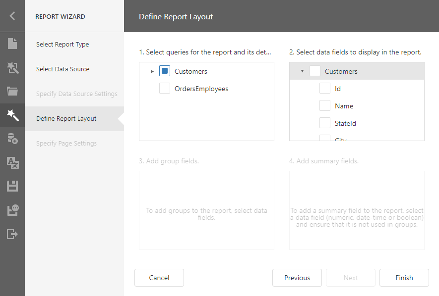

Select Data Source
On this wizard page, you can select an existing data source or create a new data source.
Select an Existing Data Source
Select the first option and choose a data source from the list.

- If you create a new report, the list displays the Report Designer's predefined data sources.
- If you edit an existing report, the list contains the Report Designer's predefined data sources and data sources added to the current report with the Data Source Wizard.
If the report and Report Designer have data sources with identical names, this list displays the report's data source.
Click Next to go to the Define Report Layout page.
Create a New Data Source
Choose 'No, I'd like to create a new data source' and select the data source type.

Note
You can create new data sources only if corresponding data connections are registered in the Report Designer.
Click Next to proceed:
- Spesify Data Source Setting (Database) if you selected Database;
- Spesify Data Sourse Setting (JSON) if you selected JSON.